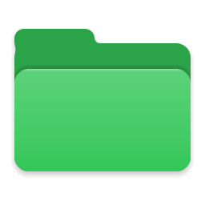
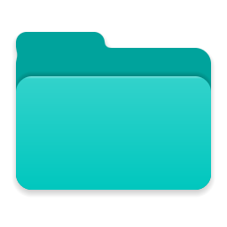
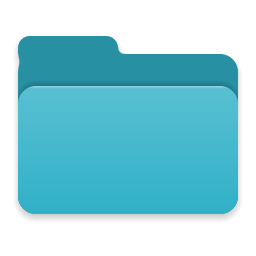
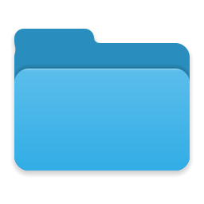
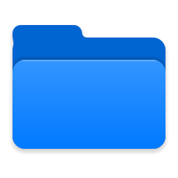
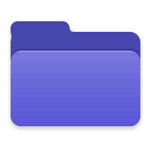
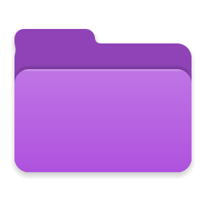
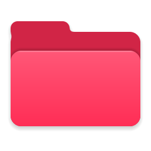
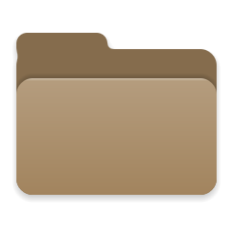
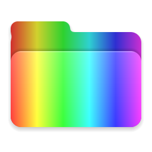
00 · Para Windows 10 y 11
Tus carpetas,
a todo color.
Clic derecho en una carpeta y elige un color, como en el Mac. Encuentra tus proyectos de un vistazo, sin cambiar nada más de tu forma de trabajar.
- 13
- colores de Apple, y el tuyo propio
- 860
- KB de instalador
- 0
- procesos en segundo plano
- 0
- datos enviados a internet
01 · Colorear
Un clic derecho. Trece colores.
FolderTintCM se suma al menú del Explorador. Elige un color y la carpeta cambia al instante, con iconos dibujados para verse nítidos en cualquier vista, de los detalles a los iconos extra grandes.
- Sobre una carpeta, o en el fondo de una carpeta abierta
- Varias carpetas seleccionadas a la vez
- «Quitar color» la deja como estaba
En Windows 11 está en «Mostrar más opciones» (o Mayús + F10). El menú habla español o inglés, como tu Windows.
02 · Personalizar
Cualquier color. El tuyo.
«Personalizado…» abre el selector de FolderTintCM. Arrastra por el cuadro y la barra de tono, o escribe el código HEX de tu marca, y mira la carpeta cambiar antes de aplicarla.
- Vista previa en vivo
- Código HEX
- Paleta a un clic
- Tus 6 últimos, también en el menú
- Un solo selector para varias carpetas
- Enter · Esc
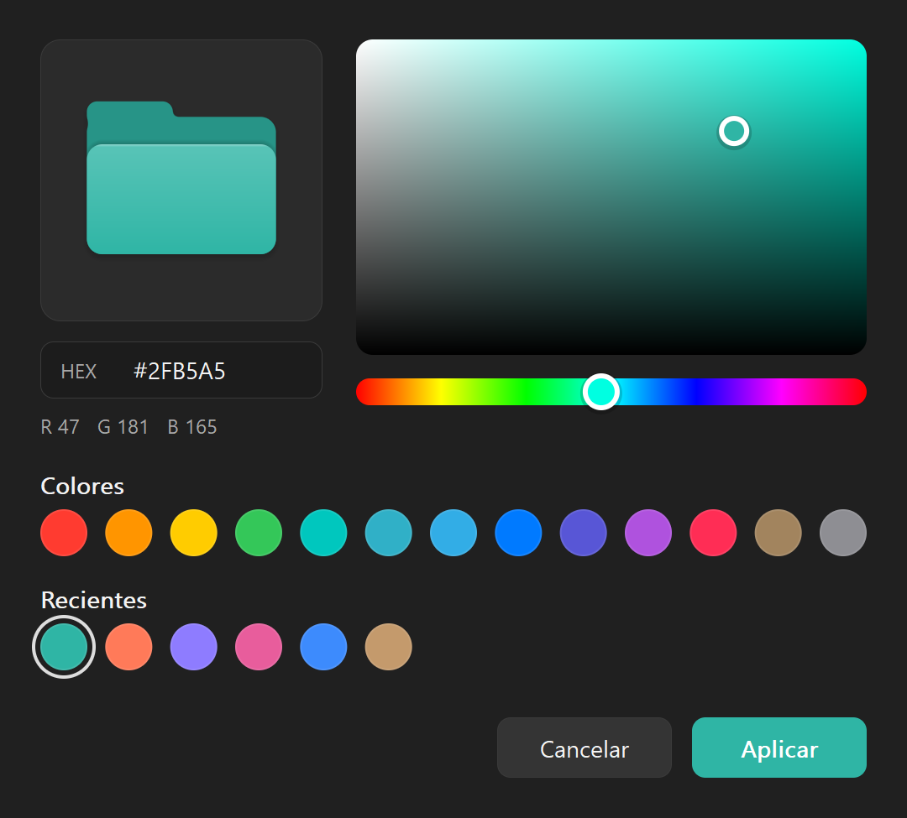
03 · Claro u oscuro
Claro u oscuro, como tu Windows.
El selector sigue el tema de tus aplicaciones, también en la barra de título, y se ve nítido en cualquier escala de pantalla.
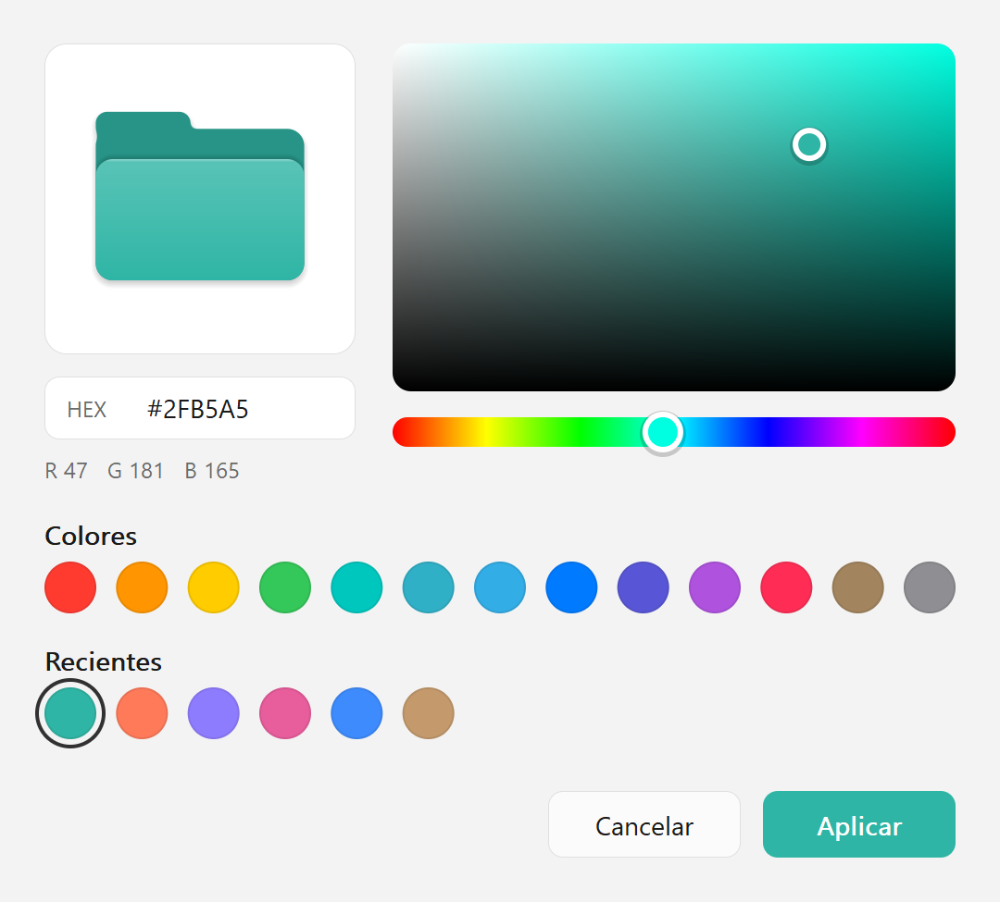
04 · Se queda
Se queda. Aunque reinicies.
El color se guarda en la propia carpeta y Windows lo recuerda cada vez que la muestra. Es lo mismo que «Propiedades → Personalizar → Cambiar icono», hecho con un clic.
- Sigue ahí al reiniciar y tras las actualizaciones de Windows
- Viaja con la carpeta si la mueves o le cambias el nombre
- En una unidad USB o de red, se ve en todo equipo con FolderTintCM
- Al desinstalar, cada carpeta vuelve a su icono de siempre
05 · Ligero
Hecho para no notarse.
Escrito en Rust sobre las API nativas de Windows. No hay nada corriendo en segundo plano: cada opción del menú abre FolderTintCM, cambia la carpeta y se cierra en un instante.
- 0
- procesos en segundo plano
- 509 KB
- un único ejecutable
- 1
- dependencia: las API de Windows
- 0
- conexiones de red: todo queda en tu equipo
Sin administrador: se instala solo para tu usuario y nunca toca las carpetas del sistema ni los iconos que tú elegiste a mano.
06 · Descargar
Ponle color
a tu orden.
Descargar el instalador MSI
El instalador aún no va firmado: Windows SmartScreen puede avisar al abrirlo (Más información → Ejecutar de todas formas). Comprueba que es el original con su SHA-256.
- Windows 10 y 11 de 64 bits
- Se instala para tu usuario, sin pedir administrador
- Una versión nueva se instala encima de la anterior
- Gratis, sin cuenta y sin publicidad
- Código abierto, licencia GPL-3.0
SHA-256 d20a2f826ec7d0e8f6ec8e24beb2fd4312e2b35f8284d7ec87f7c12da1b3b1ed